Mijn ervaring
Tijdens mijn opleidingen heb ik met verschillende soorten programma's mogen werken en leerde ik verschillende code talen schrijven. Hieronder staat een overzicht van de meest gebruikte programma's en programmeertalen. Tijdens mijn opleidingen en in mijn vrijetijd werk ik met macOS.
Grafisch
- Adobe Photoshop
- Adobe Indesign
 Adobe Illustrator
Adobe Illustrator- Inkscape
 GIMP
GIMP- Pages
Front-End Development
- Visual Studio Code
- Chrome DevTools
- Git
- GitHub
- WordPress
Programmeertalen
- HTML
- Css
- JavaScript
- React
- Redux
 Node
Node- PHP
- PostgreSQL